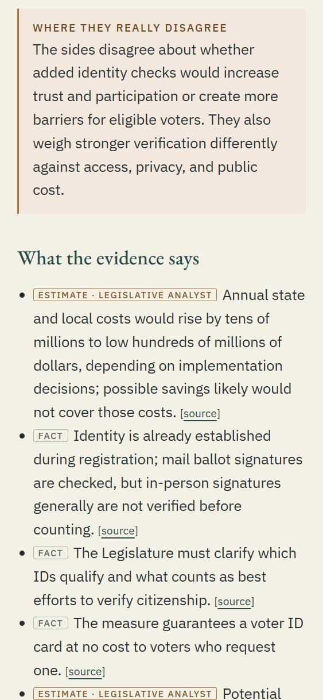

Ballots ask a lot, and most of what voters hear is a strawman
Nov 3, 2026: 14 statewide propositions in California, 9 questions in Massachusetts, 5 NYC charter proposals
California's official summaries, analysis and arguments for the 14: 35,078 words, about 2½ hours of reading
The arguments are written by campaigns to persuade, and ads cite the other side's weakest version
So voters skip measures, follow an endorsement, or vote on a headline
"The strongest argument isn't always your own."
The fix: a steelman
Strawman (what you often hear):
"Opponents just don't care about election fraud."
Steelman (what our card says):
"Opponents argue added ID requirements would keep some eligible citizens' mail ballots from counting because of mistakes or missing information."
California Prop 39 · same for the Yes side
Steelman Ballot2
The app
Address in, ballot out, in about a minute per measure
"Your ballot in 60 seconds": the matched address, districts and counts
Each side's strongest case, No left and Yes right, with a verified badge
What would change: today vs. if it passes, every claim sourced
Steelman Ballot3
What is new
Not another summary: a tested steelman for both sides
Official guides, Ballotpedia, VOTE411, news guides and chatbots summarize or endorse. None tests whether each side's case is its strongest, fairest version.
Fairness test: a second, different AI scores each side "would I sign this?" (1-5); both must score 4+
Swap test: neither side may read warmer or more certain
On the merits: no motives, donors or party attacks
Facts apart from arguments: Fact / Estimate / Perspective, each sourced
Equal treatment: same space and tone; No left, Yes right; no red or blue
Built for real voters: English, Spanish, Chinese; mobile-first; WhatsApp and WeChat sharing with both sides together
"How to vote on this" on every card: the next step, never which way
Private: address used once, never stored
Scales cheaply: one card per measure, shared by every voter
Steelman Ballot4
The agents
One AI writes. A second AI tries to break it.
Writer on gpt-6-astra, because writing a fair case from legal text is the hard step (the cheaper writer passed 1 of 3 vs 2 of 3). Challenger and translator on gpt-6-luna: a different model, about 100× cheaper, with no measurable loss.
Steelman Ballot5
One real run · California Prop 39 (voter ID)
The challenger caught a missing argument and a too-broad claim
1
Map: 1315 10th St, Sacramento → CD 7, SD 8, AD 6 in 0.7 s; official guide lists 14 propositions
2
Write: reads 3 official pages (summary, Legislative Analyst, arguments) and drafts the card
3
Challenge: fail. Yes side scored 3/5: "omits a prominent merits argument… mail-ballot signature process can delay results." No side's "officials already verify voters" is too broad
4
Rewrite with the numbered fixes
5
Challenge: pass. Both sides 4/5, swap test passed, no fidelity problems
5 model calls · 41,166 tokens · $0.25 · 96 seconds, then reused by every voter at no AI cost.

The corrected fact is now evidence line 2: mail signatures are checked, in-person generally not
Cost cutting that helped: card v3.1 used 32% fewer tokens and covered more top points (92% → 99%). That hurt: a cheaper writer was 98% cheaper but less accurate (96% vs 100% of claims supported), so it was rejected.
Steelman Ballot7
Safety
Protect trust, privacy and the budget
Attacks
Official-site allowlist; robots.txt respected
Hidden text stripped; pages fenced as untrusted
Injection words flagged: fired on 10 real cards, never leaked
No address in URLs or logs
Malfunction
Claims must cite a page actually read; quotes verbatim
0 contradicted claims in graded sample
Max 3 rewrites, else "unverified" badge
Wrong address match flagged
Overspending
Public site is snapshot-only: visitors can't trigger AI
Per card ≤20 calls, ≤150k tokens
Batch budget; clean stop on quota (it happened: Portkey cap)
Wrong-ZIP match flagged
10 of 10 safety tests pass (128 of 128 overall), offline, with no model calls.
Steelman Ballot8
Impact
Faster, fairer, and in three languages
2½ h → 1 minofficial text for 14 measures vs. one card's top layer
100%claims backed by the official guide (graded sample)
18 / 18yes, no and cost descriptions correct
28 / 28cards: both sides scored 4+ of 5
[To be added: user testing] n = __ voters · minutes to feel ready: by hand __ vs app __ · comprehension __ vs __ · confidence __ vs __ · fairness __ / 5 · ease of use __ / 100
Already shipped from feedback: "not a poll" line (a tester thought it was a polling site) · English "steelman" kept in Spanish and Chinese · two AI roles highlighted (a tester was "pleasantly surprised and even impressed") · edit address in place
Steelman Ballot9
Limits and next steps
Honest limits, and the next month
Doesn't work yet
3 states; a look-back demo of Nov 3, 2026
Candidate races thin (CA statewide only)
Evidence details stay in English
Accuracy test: 6 cards, AI-graded
WeChat in-app opening needs a developer account
Next month
All 50 states' statewide measures (~$45 per build)
Human review panel from both sides, scores published
User study with 30+ voters, incl. Spanish and Chinese speakers
Full translation; Vietnamese, Korean, Tagalog
Live daily refresh with a public changelog
Think more deeply. Vote more thoughtfully.
Steelman Ballot10
← → or space to move · F11 full screen · Ctrl+P prints one slide per page
 "Your ballot in 60 seconds": the matched address, districts and counts
"Your ballot in 60 seconds": the matched address, districts and counts Each side's strongest case, No left and Yes right, with a verified badge
Each side's strongest case, No left and Yes right, with a verified badge What would change: today vs. if it passes, every claim sourced
What would change: today vs. if it passes, every claim sourced Wrong-ZIP match flagged
Wrong-ZIP match flagged